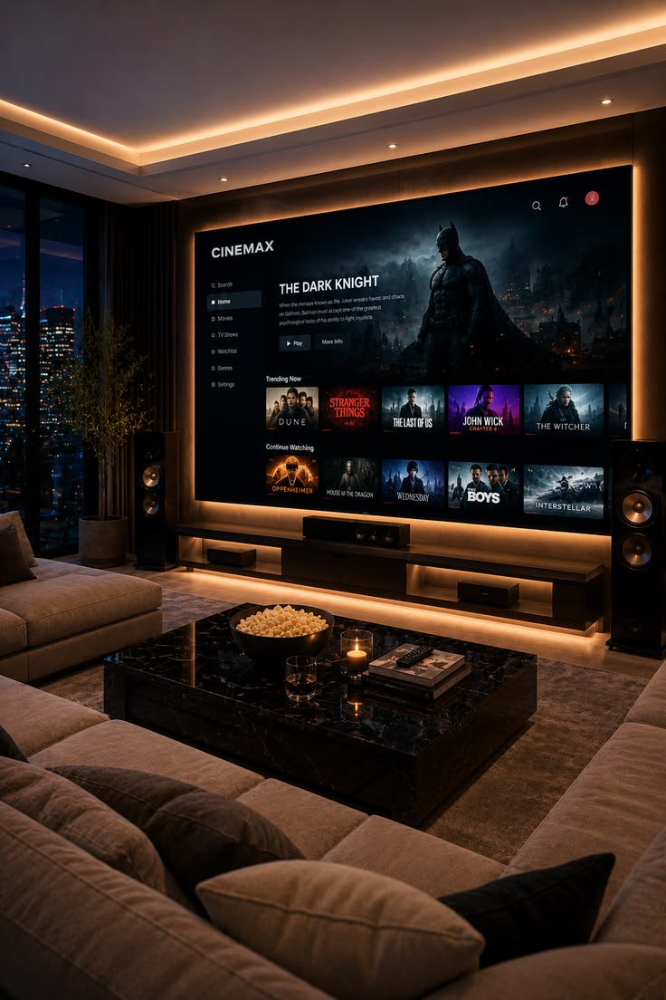
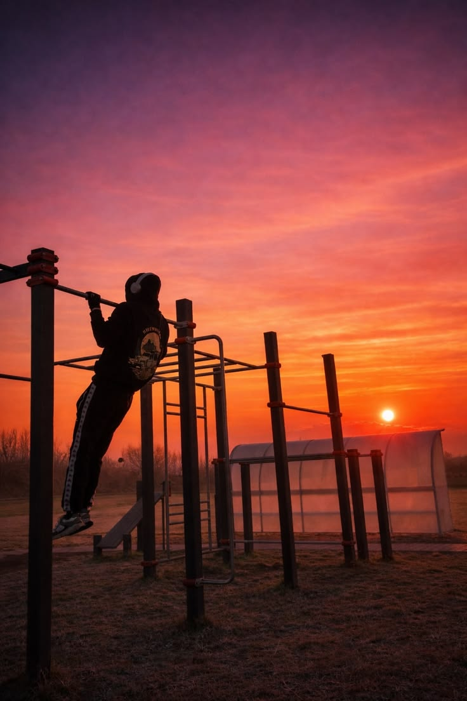

Tecnologia
Inteligência artificial cria novas oportunidades profissionais
Empresas estão utilizando inteligência artificial para automatizar processos e criar novas funções no mercado.
Acompanhe as principais notícias de diferentes áreas em um só lugar.
Empresas estão utilizando inteligência artificial para automatizar processos e criar novas funções no mercado.
Novos talentos estão recebendo oportunidades e se destacando em importantes competições esportivas.

Empreendedores estão utilizando redes sociais e lojas virtuais para alcançar novos clientes.
Estudos buscam reduzir os impactos ambientais utilizando energia limpa e novos materiais.

Filmes e séries produzidos especialmente para streaming continuam conquistando o público.

Especialistas reforçam a importância de manter uma rotina equilibrada de atividades físicas.
A inteligência artificial está transformando diferentes setores da sociedade. Empresas utilizam ferramentas inteligentes para analisar dados, automatizar tarefas e aumentar a produtividade.
Apesar da automação de algumas atividades, novas profissões relacionadas ao desenvolvimento, análise de dados, segurança digital e gerenciamento de tecnologias também estão sendo criadas.
Voltar ao inícioClubes esportivos estão investindo cada vez mais na formação de jovens atletas. As categorias de base ajudam a descobrir talentos e preparar jogadores para competições profissionais.
Além da preparação física, os jovens recebem acompanhamento psicológico, nutricional e educacional durante o processo de desenvolvimento.
Voltar ao início
Pequenos empreendedores estão encontrando novas oportunidades por meio do comércio eletrônico. Redes sociais, marketplaces e sites próprios facilitam o contato entre empresas e consumidores.
A presença digital permite que negócios locais alcancem clientes de diferentes regiões e reduzam alguns custos relacionados às lojas físicas.
Voltar ao inícioCientistas estão desenvolvendo materiais sustentáveis e novas formas de produção de energia. O objetivo é diminuir o uso de recursos naturais e reduzir a emissão de poluentes.
Entre as principais áreas de pesquisa estão a energia solar, a reciclagem, o reaproveitamento de resíduos e a criação de alternativas ao plástico.
Voltar ao inícioOs serviços de streaming continuam investindo em filmes, séries e documentários exclusivos. Essas produções ajudam as plataformas a conquistar novos assinantes.
O crescimento do mercado também aumenta as oportunidades para atores, roteiristas, diretores, produtores e profissionais de efeitos visuais.
Voltar ao inícioA prática regular de atividades físicas pode melhorar a disposição, fortalecer os músculos e contribuir para a saúde cardiovascular.
Caminhadas, corridas, ciclismo e musculação são exemplos de atividades que podem fazer parte de uma rotina saudável, respeitando os limites de cada pessoa.
Voltar ao início